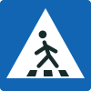

Встречаем других участников движения
Урок 4 из 5
Представьте, что по тротуару впереди идут два человека. Между ними и стеной остаётся узкий проход. Вам кажется, что вы поместитесь. Но один человек может сделать шаг в сторону, а вы уже не успеете остановиться.
Рядом с пешеходами
При совместном движении пешеходы имеют приоритет. Если на тротуаре, пешеходной дорожке, обочине или в пешеходной зоне ваша поездка создаёт помеху или опасность, спешьтесь либо замедлитесь до скорости пешеходов.
В узком месте, где человека невозможно безопасно объехать, удобнее спешиться и подождать. Звуковой сигнал не даёт вам преимущества.
У перехода и выезда из двора
По пешеходному переходу дорогу пересекают пешком. Остановитесь перед краем проезжей части, спешьтесь, оцените движение и переходите, когда это безопасно. Самокат можно вести рядом. На регулируемом переходе дождитесь разрешающего сигнала. Если пересекаете проезжую часть вне перекрёстка в месте, где можно проехать на СИМ, уступите всем, кто движется по ней.
- Замедлитесь заранее
- Остановитесь перед дорогой
- Сойдите с устройства
- Оцените сигнал и движение
- Убедитесь в безопасности
- Перейдите пешком


Знак перехода и светофоры
Знаки 5.19.1 и 5.19.2 «Пешеходный переход» — синие квадраты с белым треугольником и фигурой человека на зебре. Они обозначают место перехода. Подъезжая к нему, спешьтесь. Если есть пешеходный светофор, после спешивания ориентируйтесь на силуэт человека. Красный — ждём, зелёный — можно переходить, убедившись, что транспорт уступает.
Светофор с велосипедом регулирует движение по соответствующей велоинфраструктуре. Пункт 6.5 прямо предписывает тем, кто едет на СИМ по п. 24.2(1), смотреть на силуэт велосипеда на велодорожке, велопешеходной дорожке и велополосе, а на тротуаре и пешеходной дорожке — на силуэт пешехода.
Красный запрещает движение, зелёный разрешает. На проезжей части, где движение на СИМ разрешено, выполняйте сигналы светофора, регулирующего ваше направление. Зелёный сигнал сам по себе не разрешает въехать туда, где действует запрет.
У выезда из двора и рядом с припаркованными машинами снижайте скорость заранее. За кузовом может скрываться пешеход, а из двора может выехать автомобиль. Если обзора нет, остановитесь в месте, где можно осмотреться, прежде чем продолжить.
Если друг предлагает поехать вдвоём
Пассажира разрешено перевозить только тогда, когда это предусмотрено оборудованием или конструкцией СИМ. Если знакомый зовёт встать вдвоём на одноместную платформу самоката, ответьте прямо: «Давай я пойду пешком, встретимся у секции».
Широкая платформа сама по себе не означает, что устройство рассчитано на двоих. Поездка вдвоём меняет нагрузку и усложняет управление.
Замечаем опасность
Выберите действие. После ответа появится объяснение; ошибку можно исправить.
Все ситуации разобраны
Можно перейти дальше или повторить задание.
Сначала разберите ситуации выше. Отметка не подтверждает навык управления.